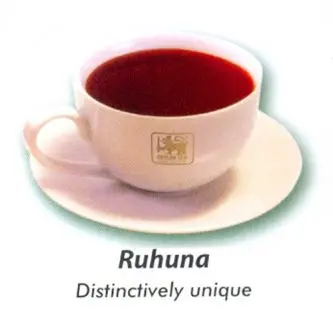

Sri Lanka’s Tea Growing Areas
There are a number of Sri Lankan tea plantations covering large areas of the Hill Country, so the chances are you won’t be too far from one wherever you are in Sri Lanka. The main tea growing areas in Sri Lanka are :
- Kandy
- Nuwara Eliya
- Uda Pussellawa (between Nuwara Eliya and Ella)
- Uva (area around Ella and Badulla)
- Sabaragamuwa (sweeping from west of Kandy down past Horton plains and to Udawalawe)
- Dimbulla (between Hatton and Nuwara Eliya)
- Ruhuna (southern province of Sri Lanka encompassing Yala)
Nuwara Eliya Region (High Grown Tea)
Other than its cold climate, scenic views, and high elevation, Nuwara Eliya
is known for its lush tea gardens. Cold and wet in climate except during the
dry season, the rainfall in the area is moderate.
This unique terrain and the climate collaborate to produce some of the finest
and most celebrated teas in the world. Tea plantations at Nuwara Eliya are
situated 6,128 ft above sea level, while most of them fall under the shadow of
Pidurutalagala, the highest mountain in Sri Lanka. Nuwara Eliya tea enjoys two
seasons where they deliver their best output in two seasons. They are the “Eastern season”
and the “Western season”. Tea leaves from Nuwara Eliya create a greenish-yellow tone
when infused and are the palest infusion among all the Ceylon Tea varieties.
Ruhuna Region (Low Grown)
More focus was given to making tea prioritized cultivation around the year 1900,
where estates were opened up at the foothills of the central country. At this time,
most of the plantations were owned by the British. Back then, the Ceylonese planting
fraternity was at practice. This was a group that specialized in the plantation of tea,
rubber, and other crops.
Both of these provinces account for 60% of Sri Lanka’s total tea production.
The tea estates of Ruhuna lie at sea level and 2000 ft from that. It is a low-grown variety.
The climatic conditions available in the area prevents the trees from receiving the full force
of the southwest monsoon winds. Before tea, most of these cultivation zones were occupied
by spice growers. The soil in the district is rich enough to support any plantation. It helps
the tea bush to grow rapidly while producing a long, beautiful leaf that turns black when withered.
Kandy Region (medium grown tea)
Kandy has always played a key role in the tea industry in Sri Lanka.
As a part of the hill country, the area has a cool climate and high moisture
in the soil. The cultivation altitude of Kandy ranges between 650m and 1300m,
or 2000 - 4000 ft above sea level. Just like other regions that follow, Kandy
tea has its flavour influenced by its growth elevation.
A cup of Kandy tea carries a lighter colour than the other teas. Estates of
the region are mostly located at the western slopes of the hills. The quality
of their products is by the “Western-quality season”. This means that the best
Kandy tea is produced during the first quarter of the season.
| Name of the Tea | Exported to | Image |
|---|---|---|
| Delicately fragrant | Middle East and Europe |  |
| Distinctively unique | Middle East |  |
| Intensely full-bodied | Middle East and Europe | |
| © Ceylon Tea Board |